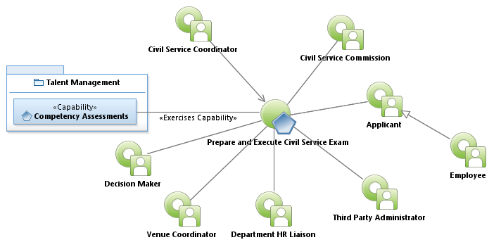
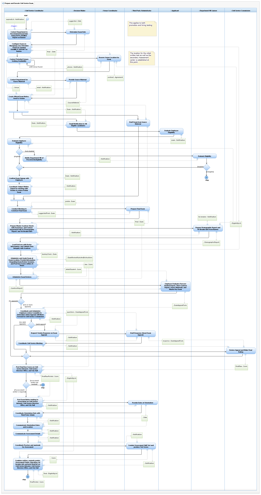

Use Case Model: Prepare and Execute Civil Service Exam
Use Case Model: Prepare and Execute Civil Service ExamArchitect: Aaron Brown, IT Enterprise Architect Senior
Date Last Modified: 2/23/2013
User Review: Paul Hafner, Leticia Paredes, Carlyn Cheney
Date: 03/22/2013
Use Case Model: Prepare and Execute Civil Service Exam
Architect: Aaron Brown, IT Enterprise Architect Senior
Date Last Modified: 2/23/2013
User Review: Paul Hafner, Leticia Paredes, Carlyn Cheney
Date: 03/22/2013
Provide for eligible candidates to sign up and participate in promotional exams with the goal of gaining a promotion.
Follow link to Role Definitions

Use Case Model: Prepare and Execute Civil Service Exam

Activity Model: Prepare and Execute Civil Service Exam
Activity Documentation
| Activity | Documentation |
|---|---|
| Prepare Master Scantron Sheets with Exam Keys, and Contact Department HR for Demographic Report, and Tie Breaker Info | Each Civil Service entity (APD, FIRE, EMS) maintain a database of information for Tie breaker resolution, consisting of Education level, number of years of service, Military Service (reserved or active) and other relevant information. |
| Prepare Demographic Report and Tie Breaker Info from Banner | Tie breakers are determined generally by time in grade, time in service, and time as a Civil Service Employee. Other points like education (APD only) or seniority can be part of this evaluation. |